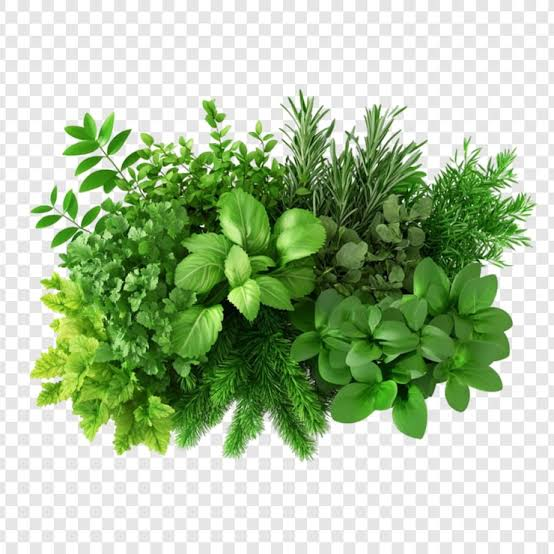

9. Bilva-based Classical Formulations
— used in Ayurvedic practice.
10. Food Products
— beverages, preserves and
other fruit preparations.
These examples describe traditional
or food applications and should not
be interpreted as guaranteed treatments.
5. ⚠️ Safety Information
Correct botanical identification
is important before medicinal use.
Traditional use does not automatically
prove effectiveness for every health
condition.
Concentrated extracts and
medicinal preparations may behave
differently from ordinary food use.
People taking medicines or managing
a medical condition should consult
a qualified healthcare professional
before using concentrated herbal
preparations.
6. 🪷 Ayurveda Information
Bilva is an important plant in
classical Ayurvedic knowledge.
Rasa:
Kashaya, Tikta and Madhura are
described in traditional sources
for different aspects or parts.
Guna:
Guru and Ruksha are commonly
described, although properties
can vary by source and plant part.
Virya:
Ushna is commonly cited.
Vipaka:
Katu is commonly cited.
Traditional descriptions should
always be checked against the
specific classical source.
7. 🔬 Research & References
Modern scientific research has
investigated Bilva for its
phytochemical composition,
antioxidant activity,
antimicrobial activity and
other biological properties.
A considerable part of this
evidence comes from laboratory
and preclinical research.
Such findings should not be
presented as proof that the
plant treats a particular disease.
Botanical information should be
checked with recognised botanical
databases and herbarium resources.
Ayurvedic information should be
checked against authoritative
classical texts and pharmacopoeial
references.
1. Bilva Phala
→ Special Effect on Body: Traditionally valued for
digestive
support and the nutritional properties of bael fruit.
→ Plant Part: Fruit
→ Active Constituents: Tannins, marmelosin and flavonoids
→ Traditional Role: Traditional digestive and dietary preparation.
2. Bilva Kachcha Phala
→ Special Effect on Body: Unripe bael contains
tannins and other
compounds traditionally associated with digestive-supporting use.
→ Plant Part: Unripe fruit
→ Active Constituents: Tannins and marmelosin
→ Traditional Role: Traditional fruit preparation.
3. Bilva Phala Majja
→ Special Effect on Body: The fruit pulp provides
dietary fiber and
plant compounds traditionally valued for digestive support.
→ Plant Part: Fruit pulp
→ Active Constituents: Fiber, tannins and phytochemicals
→ Traditional Role: Fruit-pulp preparation.
4. Bilva Patra
→ Special Effect on Body: Bilva leaves contain
flavonoids and other
phytochemicals studied for antioxidant and biological activity.
→ Plant Part: Leaves
→ Active Constituents: Flavonoids and phenolic compounds
→ Traditional Role: Traditional leaf-based herbal use.
5. Bilva Moola
→ Special Effect on Body: Root constituents have
been studied for
antioxidant and other biological activities.
→ Plant Part: Root
→ Active Constituents: Alkaloids, coumarins and other phytochemicals
→ Traditional Role: Traditional root-based herbal preparation.
6. Bilva Twak
→ Special Effect on Body: Bark contains tannins and
other
phytochemicals associated with astringent and antioxidant research properties.
→ Plant Part: Bark
→ Active Constituents: Tannins, flavonoids and phenolic compounds
→ Traditional Role: Traditional bark preparation.
7. Bilva Swarasa
→ Special Effect on Body: Fresh bael preparations
provide
plant-derived phytochemicals traditionally associated with digestive support.
→ Plant Part: Fresh fruit or specified plant part
→ Active Constituents: Tannins and flavonoids
→ Traditional Role: Fresh juice preparation.
8. Bilva Churna
→ Special Effect on Body: Provides powdered bael
plant constituents
traditionally used for digestive-supporting purposes.
→ Plant Part: Dried fruit or specified plant part
→ Active Constituents: Tannins, marmelosin and other phytochemicals
→ Traditional Role: Powdered herbal preparation.
9. Bilva Kwatha
→ Special Effect on Body: Extracts water-soluble
plant constituents
and is traditionally associated with digestive-supporting herbal use.
→ Plant Part: Bark, root or other specified parts
→ Active Constituents: Tannins and water-soluble phytochemicals
→ Traditional Role: Decoction preparation.
10. Bilva-based Preparation
→ Special Effect on Body: The traditional effect
varies by plant
part, with Bilva mainly valued for digestive and astringent herbal applications.
→ Main Plant Parts: Fruit, leaves, bark and root
→ Major Constituents: Tannins, marmelosin, flavonoids and phenolics
→ Traditional Role: Bilva-based traditional herbal preparation.
Correct botanical identification
is important before medicinal use.
Fresh fruit used as food is
different from concentrated
extracts and essential oils.
Individual sensitivity to
citrus products can occur.
Some citrus products or
concentrated preparations
can have medicine-interaction
considerations.
Anyone taking medicines or
managing a medical condition
should consult a qualified
healthcare professional before
using concentrated preparations.
6. 🪷 Ayurveda Information
Chakotra and related citrus
fruits occur in traditional
Indian food and health contexts.
Rasa:
Amla is commonly associated
with citrus fruits, although
exact descriptions should be
checked against the relevant
Ayurvedic source.
Guna:
Properties can vary according
to fruit maturity and
preparation.
Virya:
Traditional descriptions
should be checked against
authoritative sources.
Dosha:
A universal dosha statement
should not be made without
specifying the exact fruit,
maturity and preparation.
7. 🔬 Research & References
Modern research has examined
Chakotra and Citrus species
for nutritional composition,
flavonoids, essential oils,
antioxidant activity and
food chemistry.
Citrus flavonoids and other
phytochemicals remain
important areas of nutritional
and pharmacological research.
Laboratory findings do not
by themselves establish that
Chakotra treats a particular
disease.
Botanical identity and
distribution should be checked
using recognised botanical
databases.
Chemical and pharmacological
information should preferably
be evaluated from peer-reviewed
scientific literature.
1. Chakotra Phala
→ Special Effect on Body: Provides fruit-derived
nutrients and
antioxidant phytochemicals that may support normal cellular protection.
→ Plant Part: Fruit
→ Active Constituents: Vitamin C, flavonoids and other citrus phytochemicals
→ Traditional Role: Nutritional and digestive-supporting fruit.
2. Chakotra Swarasa
→ Special Effect on Body: Provides hydration,
vitamin C and citrus
phytochemicals that contribute to antioxidant support.
→ Plant Part: Fresh fruit
→ Active Constituents: Vitamin C and flavonoids
→ Traditional Role: Fresh fruit-juice preparation.
3. Chakotra Peel Preparation
→ Special Effect on Body: Citrus peel
phytochemicals may provide
antioxidant activity and support normal digestive function.
→ Plant Part: Fruit peel
→ Active Constituents: Flavonoids and aromatic essential-oil constituents
→ Traditional Role: Peel-based herbal preparation.
4. Chakotra Seed Preparation
→ Special Effect on Body: Seed phytochemicals are
studied for
antioxidant and other biological activities.
→ Plant Part: Seeds
→ Active Constituents: Seed-specific phytochemicals
→ Traditional Role: Seed-based botanical preparation.
5. Chakotra Leaf Preparation
→ Special Effect on Body: Leaf phytochemicals are
associated with
antioxidant and botanical biological activity.
→ Plant Part: Leaves
→ Active Constituents: Flavonoids and other phytochemicals
→ Traditional Role: Leaf-based herbal preparation.
6. Chakotra Phala Churna
→ Special Effect on Body: Provides fruit-derived
phytochemicals and
may contribute to antioxidant and digestive support.
→ Plant Part: Dried fruit
→ Active Constituents: Flavonoids and citrus phytochemicals
→ Traditional Role: Powdered fruit preparation.
7. Chakotra Peel Churna
→ Special Effect on Body: Concentrates citrus peel
flavonoids and
aromatic compounds associated with antioxidant activity.
→ Plant Part: Dried peel
→ Active Constituents: Flavonoids and essential-oil constituents
→ Traditional Role: Dried peel powder preparation.
8. Chakotra Juice
→ Special Effect on Body: Supplies vitamin C,
fluids and citrus
phytochemicals that support nutritional antioxidant intake.
→ Plant Part: Fruit
→ Active Constituents: Vitamin C and flavonoids
→ Traditional Role: Fruit juice preparation.
9. Chakotra Peel Aromatic
Preparation
→ Special Effect on Body: Aromatic citrus
constituents contribute
to the characteristic fragrance and are studied for antioxidant properties.
→ Plant Part: Peel
→ Active Constituents: Volatile aromatic compounds
→ Traditional Role: Aromatic citrus preparation.
10. Chakotra-based Preparation
→ Special Effect on Body: Depending on the plant
part used, the
preparation may provide nutritional, antioxidant and digestive-supporting
properties.
→ Main Plant Parts: Fruit, peel and seeds
→ Major Constituents: Flavonoids, vitamin C and aromatic phytochemicals
→ Traditional Role: Chakotra-based herbal preparation.
Medicinal Effect:
Antimicrobial, Anti-inflammatory Active Compounds: Azadirachtin,
Nimbin, Nimbidin
This information is taken from the existing
website data.
The supplied source page
does not provide a detailed cultivation protocol for this plant. No extra
cultivation instructions have been added here.
Traditional Use:
Skin care, Wound care
The formulation entries already present on
the page are retained below.
The supplied source page
does not provide a complete safety profile for this plant. This website
information is educational and is not a substitute for professional medical
advice.
The supplied source page
provides traditional-use and plant/formulation information, but does not
contain a full Ayurvedic monograph for this topic.
The supplied source page
contains plant information and formulation entries, but does not provide a
complete bibliography or research-paper list for this plant.
1. Nimba Taila
→ Special Effect on Body: Traditionally associated
with external
skin-supporting and soothing properties.
→ Neem Part: Neem seed oil
→ Active Neem Constituents: Nimbidin and related limonoids
→ Other Ingredients: Oil base and formulation-specific ingredients
→ Why Neem is Used: Traditionally valued for skin-supporting properties.
2. Nimba Ghrita
→ Neem Part: Neem leaves and/or specified parts
→ Active Constituents: Limonoids and bitter principles
→ Why Neem is Used: Traditionally included in selected Ayurvedic preparations.
3. Nimbadi Kwatha
→ Neem Part: Neem bark/leaves depending on formulation
→ Active Constituents: Bitter limonoids
→ Why Neem is Used: Traditionally used as a bitter herbal decoction.
4. Panchatikta Ghrita
→ Neem Part: Neem bark and specified parts
→ Active Constituents: Limonoids and bitter principles
→ Why Neem is Used: Neem is one of the bitter herbs used traditionally.
5. Nimbamritadi Taila
→ Neem Part: Neem
→ Active Constituents: Limonoids and bitter principles
→ Why Neem is Used: Traditional medicated-oil preparation.
6. Nimba Churna
→ Neem Part: Leaves or bark
→ Active Constituents: Nimbin, nimbidin and related compounds
→ Why Neem is Used: Traditional powdered plant preparation.
7. Nimba Swarasa
→ Neem Part: Fresh neem leaves
→ Active Constituents: Various bitter phytochemicals
→ Why Neem is Used: Traditional fresh-juice preparation.
8. Nimba Kwatha
→ Neem Part: Leaves or bark
→ Active Constituents: Bitter limonoids
→ Why Neem is Used: Traditional decoction preparation.
9. Nimba Arishta
→ Neem Part: Neem plant material
→ Active Constituents: Limonoids and bitter compounds
→ Why Neem is Used: Neem is traditionally included in polyherbal preparations.
10. Nimba Lepa
→ Neem Part: Neem leaves
→ Active Constituents: Nimbidin and related compounds
→ Why Neem is Used: Traditional external herbal preparation.
Shrub
Shrubs — explore plants from the shrub category
1) गुलाब (Rose)
Useful Parts of Rose
A - Whole Plant: Rose plant
B - Flowers: Rose flowers
C - Petals: Rose petals
D - Fruits: Rose hips
E - Leaves: Rose leaves
F - Seeds: Rose seeds
G - Roots: Rose roots
Plant Name Rose
Botanical Name Rosa species
Family Rosaceae
Parts Used Flowers, Petals, Rose Hips
Medicinal Effect Antioxidant, Soothing
Active Compounds Flavonoids, Phenolics,
Aromatic compounds
Traditional Use Cooling, soothing and
aromatic herbal use
+ ADD MORE
Write Heading
Write Information
MORE INFO
Botanical Name:
Rosa species Family: Rosaceae Parts Used: Flowers,
Petals, Rose Hips Category: Shrub.
Medicinal Effect:
Antioxidant, Soothing Active Compounds: Flavonoids, Phenolics,
Aromatic compounds
This information is taken from the existing
website data.
The supplied source page
does not provide a detailed cultivation protocol for this plant. No extra
cultivation instructions have been added here.
Traditional Use:
Cooling, soothing and aromatic herbal use
The formulation entries
already present on the page are retained below.
The supplied source page
does not provide a complete safety profile for this plant. This website
information is educational and is not a substitute for professional medical
advice.
The supplied source page
provides traditional-use and plant/formulation information, but does not
contain a full Ayurvedic monograph for this topic.
The supplied source page
contains plant information and formulation entries, but does not provide a
complete bibliography or research-paper list for this plant.
1. Rosa Pushpa
→ Special Effect on Body: Rose flowers contain
aromatic and
polyphenolic compounds associated with soothing and antioxidant properties.
→ Plant Part: Flowers
→ Active Constituents: Flavonoids, phenolic compounds and aromatic constituents
→ Traditional Role: Traditional aromatic and soothing herbal use.
2. Rose Petal Preparation
→ Special Effect on Body: Rose petals provide
aromatic and
polyphenolic compounds traditionally associated with soothing properties.
→ Plant Part: Petals
→ Active Constituents: Flavonoids, anthocyanins and aromatic compounds
→ Traditional Role: Traditional petal-based preparation.
3. Rose Swarasa
→ Special Effect on Body: Fresh rose material
contains polyphenols
and aromatic constituents with antioxidant research interest.
→ Plant Part: Fresh petals or flowers
→ Active Constituents: Phenolics and flavonoids
→ Traditional Role: Fresh botanical preparation.
4. Rose Churna
→ Special Effect on Body: Dried rose petals provide
concentrated
aromatic and polyphenolic plant constituents.
→ Plant Part: Dried petals
→ Active Constituents: Flavonoids and phenolic compounds
→ Traditional Role: Powdered herbal preparation.
5. Rose Arka
→ Special Effect on Body: Distilled rose
preparation contains
aromatic constituents and is traditionally valued for cooling and soothing use.
→ Plant Part: Flowers or petals
→ Active Constituents: Volatile aromatic compounds
→ Traditional Role: Distilled floral preparation.
6. Gulab Jala
→ Special Effect on Body: Rose water is
traditionally valued for
its cooling, refreshing and soothing properties.
→ Plant Part: Rose petals
→ Active Constituents: Water-soluble aromatic and phenolic constituents
→ Traditional Role: Floral water preparation.
7. Rose Taila
→ Special Effect on Body: External aromatic use
provides a soothing
sensory effect and contact with rose-derived constituents.
→ Plant Part: Rose flowers or petals
→ Active Constituents: Aromatic compounds
→ Traditional Role: External aromatic oil preparation.
8. Rose Lepa
→ Special Effect on Body: External application is
traditionally
associated with soothing and cooling skin-care use.
→ Plant Part: Rose petals
→ Active Constituents: Flavonoids, phenolics and aromatic compounds
→ Traditional Role: External floral paste.
9. Rose Hip Preparation
→ Special Effect on Body: Rose hips provide vitamin
C and
antioxidant plant compounds that support nutritional antioxidant intake.
→ Plant Part: Rose hips
→ Active Constituents: Vitamin C, carotenoids and phenolic compounds
→ Traditional Role: Fruit-based nutritional preparation.
10. Rose-based Preparation
→ Special Effect on Body: Rose-based preparations
are mainly
associated with soothing, antioxidant, cooling and aromatic properties.
→ Main Plant Parts: Flowers, petals and rose hips
→ Major Constituents: Flavonoids, phenolics, vitamin C and aromatic compounds
→ Traditional Role: Rose-based herbal preparation.
2) गुड़हल (Gudhal / Hibiscus)
Useful Parts of Gudhal
A - Whole Plant: Hibiscus plant
B - Flowers: Hibiscus flowers
C - Leaves: Hibiscus leaves
D - Roots: Hibiscus roots
E - Stems: Hibiscus stems
F - Seeds: Hibiscus seeds
Plant Name Hibiscus / Gudhal
Botanical Name Hibiscus rosa-sinensis
Family Malvaceae
Parts Used Flowers, Leaves, Roots
Medicinal Effect Antioxidant, Soothing
Active Compounds Anthocyanins, Flavonoids,
Phenolic
compounds
Traditional Use Hair care, Skin care,
Traditional herbal use
Medicinal
Effect: Antioxidant, Soothing Active Compounds:
Anthocyanins, Flavonoids, Phenolic compounds
This information is
taken from the existing website data.
The supplied source
page does not provide a detailed cultivation protocol for this plant. No
extra cultivation instructions have been added here.
Traditional
Use: Hair care, Skin care, Traditional herbal use
The
formulation entries already present on the page are retained below.
The supplied source
page does not provide a complete safety profile for this plant. This website
information is educational and is not a substitute for professional medical
advice.
The supplied source
page provides traditional-use and plant/formulation information, but does
not contain a full Ayurvedic monograph for this topic.
The supplied source
page contains plant information and formulation entries, but does not
provide a complete bibliography or research-paper list for this plant.
1. Gudhal Pushpa
→ Special Effect on Body: Hibiscus flowers contain
polyphenols and
pigments with antioxidant activity that may help protect cells from oxidative
stress.
→ Plant Part: Flowers
→ Active Constituents: Anthocyanins, flavonoids and phenolic compounds
→ Traditional Role: Traditional flower-based herbal use.
2. Gudhal Swarasa
→ Special Effect on Body: Fresh plant material
provides polyphenols
and other phytochemicals with antioxidant research interest.
→ Plant Part: Fresh flowers or leaves
→ Active Constituents: Flavonoids and phenolic compounds
→ Traditional Role: Fresh plant preparation.
3. Gudhal Churna
→ Special Effect on Body: The powdered plant
material provides
polyphenols and other phytochemicals associated with antioxidant activity.
→ Plant Part: Dried flowers or leaves
→ Active Constituents: Flavonoids, anthocyanins and phenolics
→ Traditional Role: Powdered herbal preparation.
4. Gudhal Kwatha
→ Special Effect on Body: Water-extracted plant
compounds may
contribute to antioxidant and soothing botanical activity.
→ Plant Part: Flowers or leaves
→ Active Constituents: Water-soluble polyphenols and flavonoids
→ Traditional Role: Decoction-type herbal preparation.
5. Gudhal Taila
→ Special Effect on Body: External use provides
contact with flower
and plant constituents traditionally valued for soothing and hair-supporting
applications.
→ Plant Part: Flowers and leaves
→ Active Constituents: Flavonoids, mucilage and plant oils
→ Traditional Role: External herbal oil preparation.
6. Gudhal Lepa
→ Special Effect on Body: External application
provides soothing
contact with plant polyphenols and mucilaginous constituents.
→ Plant Part: Flowers and leaves
→ Active Constituents: Polyphenols, flavonoids and mucilage
→ Traditional Role: External herbal paste.
7. Gudhal Pushpa Lepa
→ Special Effect on Body: Flower-based external
application is
traditionally associated with soothing and cosmetic herbal use.
→ Plant Part: Flowers
→ Active Constituents: Anthocyanins and flavonoids
→ Traditional Role: Traditional flower paste.
8. Gudhal Hair Oil
→ Special Effect on Body: External scalp
application is
traditionally valued for conditioning and hair-care support.
→ Plant Part: Flowers and leaves
→ Active Constituents: Mucilage, flavonoids and plant phenolics
→ Traditional Role: Traditional hair-care oil preparation.
9. Gudhal Arka
→ Special Effect on Body: Distilled plant
preparation contains
selected volatile or water-distilled constituents depending on the method used.
→ Plant Part: Flowers or leaves
→ Active Constituents: Distillable plant constituents
→ Traditional Role: Botanical distilled preparation.
10. Gudhal-based Preparation
→ Special Effect on Body: Gudhal preparations are
mainly associated
with antioxidant, soothing, skin-care and traditional hair-care properties.
→ Main Plant Parts: Flowers and leaves
→ Major Constituents: Anthocyanins, flavonoids, phenolics and mucilage
→ Traditional Role: Gudhal-based herbal preparation.
This information is taken from the existing website data.
The supplied source
page does not provide a detailed cultivation protocol for this plant. No
extra cultivation instructions have been added here.
Traditional
Use: Digestive support, Aromatic herbal use
The
formulation entries already present on the page are retained below.
The supplied source
page does not provide a complete safety profile for this plant. This website
information is educational and is not a substitute for professional medical
advice.
The supplied source
page provides traditional-use and plant/formulation information, but does
not contain a full Ayurvedic monograph for this topic.
The supplied source
page contains plant information and formulation entries, but does not
provide a complete bibliography or research-paper list for this plant.
1. Gulmehndi Patra
→ Special Effect on Body: Rosemary leaves contain
antioxidant
compounds that help protect cells from oxidative stress.
→ Plant Part: Leaves
→ Active Constituents: Rosmarinic acid, carnosic acid and essential oils
→ Traditional Role: Aromatic and digestive-supporting herbal use.
2. Gulmehndi Swarasa
→ Special Effect on Body: Fresh leaf constituents
provide
antioxidant phytochemicals and aromatic compounds.
→ Plant Part: Fresh leaves
→ Active Constituents: Rosmarinic acid and volatile oils
→ Traditional Role: Fresh herbal preparation.
3. Gulmehndi Churna
→ Special Effect on Body: The powdered herb
provides concentrated
aromatic and antioxidant plant constituents.
→ Plant Part: Dried leaves
→ Active Constituents: Carnosic acid, rosmarinic acid and essential oils
→ Traditional Role: Powdered herbal preparation.
4. Gulmehndi Kwatha
→ Special Effect on Body: Water-soluble rosemary
compounds may
contribute to antioxidant and digestive-supporting activity.
→ Plant Part: Leaves
→ Active Constituents: Rosmarinic acid and other polyphenols
→ Traditional Role: Decoction-type herbal preparation.
5. Gulmehndi Taila
→ Special Effect on Body: Aromatic rosemary oil
constituents are
traditionally valued for external soothing and aromatic applications.
→ Plant Part: Leaves and flowering tops
→ Active Constituents: Essential oils, including 1,8-cineole and camphor
→ Traditional Role: External aromatic herbal oil.
6. Gulmehndi Arka
→ Special Effect on Body: Contains water-distilled
aromatic
constituents and is mainly valued for its aromatic botanical properties.
→ Plant Part: Leaves and flowering tops
→ Active Constituents: Volatile aromatic compounds
→ Traditional Role: Distilled herbal preparation.
7. Gulmehndi Pushpa
→ Special Effect on Body: Flowers contain aromatic
and phenolic
compounds with antioxidant research interest.
→ Plant Part: Flowers
→ Active Constituents: Essential oils and phenolic compounds
→ Traditional Role: Aromatic botanical preparation.
8. Gulmehndi Essential
Oil
→ Special Effect on Body: Volatile compounds
provide characteristic
aroma and are studied for antioxidant and antimicrobial properties.
→ Plant Part: Leaves and flowering tops
→ Active Constituents: 1,8-cineole, camphor and other volatile compounds
→ Traditional Role: Aromatic essential-oil preparation.
9. Gulmehndi Lepa
→ Special Effect on Body: External application
provides contact
with rosemary's aromatic and antioxidant plant constituents.
→ Plant Part: Leaves
→ Active Constituents: Rosmarinic acid and aromatic compounds
→ Traditional Role: External herbal paste preparation.
10. Gulmehndi-based Preparation
→ Special Effect on Body: Rosemary-based
preparations are mainly
associated with antioxidant, aromatic and digestive-supporting properties.
→ Main Plant Parts: Leaves and flowering tops
→ Major Constituents: Rosmarinic acid, carnosic acid and essential oils
→ Traditional Role: Rosemary-based herbal preparation.
Herb
Explore the herb category — one plant at a time.

Click a plant name to open its details
1) हरिद्रा (Haridra)
Useful Parts of Haridra
A - Rhizome: Main medicinal part
B - Leaves: Haridra leaves
C - Flowers: Haridra flowers
D - Whole Plant: Haridra plant
Plant Name Turmeric
Botanical Name Curcuma longa
Family Zingiberaceae
Parts Used Rhizome
Medicinal Effect Antioxidant,
Anti-inflammatory
Active Compounds Curcumin, Curcuminoids
Traditional Use Digestive support, Skin
care
+ ADD MORE
Write Heading
Write Information
MORE INFO
Botanical Name:
Curcuma longa Family: Zingiberaceae Parts Used:
Rhizome Category: Herb.
Medicinal
Effect: Antioxidant, Anti-inflammatory Active Compounds:
Curcumin, Curcuminoids
This information is taken from the
existing website data.
The supplied source
page does not provide a detailed cultivation protocol for this plant. No
extra cultivation instructions have been added here.
Traditional Use:
Digestive support, Skin care
The formulation entries already
present on the page are retained below.
The supplied source
page does not provide a complete safety profile for this plant. This website
information is educational and is not a substitute for professional medical
advice.
The supplied source
page provides traditional-use and plant/formulation information, but does
not contain a full Ayurvedic monograph for this topic.
The supplied source
page contains plant information and formulation entries, but does not
provide a complete bibliography or research-paper list for this plant.
1. Haridra Khanda
→ Turmeric Part: Rhizome
→ Active Compound: Curcuminoids
→ Traditional role: Herbal preparation containing Haridra.
2. Haridra Churna
→ Turmeric Part: Rhizome
→ Active Compound: Curcumin and related curcuminoids
3. Nisha Amalaki
→ Turmeric Part: Rhizome
→ Active Compound: Curcuminoids
→ Other major herb: Amalaki
4. Haridra Taila
→ Turmeric Part: Rhizome
→ Traditional role: External herbal oil preparation.
5. Haridra Ksheerapaka
→ Turmeric Part: Rhizome
→ Traditional role: Milk-based traditional preparation.
6. Haridra Lavana
→ Turmeric Part: Rhizome
→ Traditional role: Digestive-supporting traditional preparation.
7. Haridra Lepa
→ Turmeric Part: Rhizome
→ Traditional role: External herbal paste.
8. Haridra Arka
→ Turmeric Part: Rhizome
→ Traditional role: Selected herbal preparation.
9. Haridra Asava
→ Turmeric Part: Rhizome
→ Active Compounds: Curcuminoids and other phytochemicals
10. Haridra-based Preparations
→ Main Plant Part: Rhizome
→ Major Constituents: Curcuminoids
2) गुडूची (Guduchi)
Useful Parts of Guduchi
A - Whole Plant: Traditionally used plant material
B - Stem: Main medicinal part
C - Leaves: Used in selected traditional preparations
D - Flowers: Traditional plant part
E - Fruits: Naturally occurring plant constituents
Medicinal
Effect: Immunomodulatory, Antioxidant Active Compounds:
Tinosporin, Berberine
This information is taken from the existing
website data.
The supplied source
page does not provide a detailed cultivation protocol for this plant. No
extra cultivation instructions have been added here.
Traditional Use:
Fever support, Digestive support
The formulation entries already
present on the page are retained below.
The supplied source
page does not provide a complete safety profile for this plant. This website
information is educational and is not a substitute for professional medical
advice.
The supplied source
page provides traditional-use and plant/formulation information, but does
not contain a full Ayurvedic monograph for this topic.
The supplied source
page contains plant information and formulation entries, but does not
provide a complete bibliography or research-paper list for this plant.
1. Guduchi Satva
→ Giloy Part: Stem
→ Active Compounds: Diterpenoids and alkaloids
2. Guduchyadi Churna
→ Giloy Part: Stem
→ Traditional role: Digestive-supporting herbal preparation.
3. Amritarishta
→ Giloy Part: Stem
→ Traditional role: Fever-related Ayurvedic preparation.
4. Guduchi Ghrita
→ Giloy Part: Stem
→ Traditional role: Ghrita-based preparation.
5. Guduchi Taila
→ Giloy Part: Stem
→ Traditional role: External herbal oil preparation.
6. Guduchi Churna
→ Giloy Part: Stem
→ Traditional role: Powdered plant preparation.
7. Guduchi Swarasa
→ Giloy Part: Fresh stem
→ Traditional role: Fresh juice preparation.
8. Guduchi Kwatha
→ Giloy Part: Stem
→ Traditional role: Decoction preparation.
9. Guduchyadi Tailam
→ Giloy Part: Stem
→ Traditional role: Traditional medicated oil.
10. Guduchi-based Preparations
→ Main Plant Part: Stem
→ Major Constituents: Diterpenoids, alkaloids and polysaccharides
3) सदाबहार (Sadabahar)
Useful Parts of Sadabahar
A - Whole Plant: Sadabahar plant
B - Leaves: Sadabahar leaves
C - Roots: Sadabahar roots
D - Flowers: Sadabahar flowers
E - Stems: Sadabahar stems
F - Seeds: Sadabahar seeds
Plant Name Sadabahar
Botanical Name Catharanthus roseus
Family Apocynaceae
Parts Used Leaves, Roots, Flowers, Whole
Plant
Medicinal Effect Pharmacologically active
alkaloids
Active Compounds Vincristine, Vinblastine,
Catharanthine
Traditional Use Traditional herbal use and
pharmacological
research
Medicinal
Effect: Pharmacologically active alkaloids Active
Compounds: Vincristine, Vinblastine, Catharanthine
This
information is taken from the existing website data.
The supplied source
page does not provide a detailed cultivation protocol for this plant. No
extra cultivation instructions have been added here.
Traditional
Use: Traditional herbal use and pharmacological
research
The formulation entries already present on the page are
retained below.
The supplied source
page does not provide a complete safety profile for this plant. This website
information is educational and is not a substitute for professional medical
advice.
The supplied source
page provides traditional-use and plant/formulation information, but does
not contain a full Ayurvedic monograph for this topic.
The supplied source
page contains plant information and formulation entries, but does not
provide a complete bibliography or research-paper list for this plant.
1. Sadabahar Leaf
Preparation
→ Special Effect on Body: Contains indole alkaloids
with
significant pharmacological activity under scientific study.
→ Plant Part: Leaves
→ Active Constituents: Vindoline, catharanthine and related alkaloids
→ Traditional Role: Traditional botanical preparation.
2. Sadabahar Root
Preparation
→ Special Effect on Body: Root alkaloids have
pharmacological
activity and are mainly important for scientific research.
→ Plant Part: Roots
→ Active Constituents: Indole alkaloids
→ Traditional Role: Traditional plant-part preparation.
3. Sadabahar Flower
Preparation
→ Special Effect on Body: Flowers contain several
phytochemicals
and are studied for their biological properties.
→ Plant Part: Flowers
→ Active Constituents: Various phytochemicals
→ Traditional Role: Botanical herbal preparation.
4. Sadabahar Whole Plant
Preparation
→ Special Effect on Body: The plant contains
pharmacologically
important indole alkaloids with significant research interest.
→ Plant Part: Whole plant
→ Active Constituents: Indole alkaloids
→ Traditional Role: Traditional botanical use.
5. Vincristine
→ Special Effect on Body: A vinca alkaloid that
acts on cell
division and has an important role in modern oncology under specialist medical
supervision.
→ Plant Source: Catharanthus roseus
→ Active Compound: Vincristine
→ Medical Importance: Important pharmaceutical alkaloid.
6. Vinblastine
→ Special Effect on Body: A vinca alkaloid that
interferes with
cell division and is used in specialist medical treatment.
→ Plant Source: Catharanthus roseus
→ Active Compound: Vinblastine
→ Medical Importance: Important pharmaceutical alkaloid.
7. Indole Alkaloid
Research
→ Special Effect on Body: Sadabahar indole
alkaloids show
significant pharmacological activity and are extensively studied scientifically.
→ Plant Part: Mainly leaves and roots
→ Active Constituents: Vincristine, vinblastine and related alkaloids
→ Importance: Major pharmaceutical research area.
8. Sadabahar Churna
→ Special Effect on Body: Contains plant alkaloids
and other
phytochemicals; effects depend on composition and preparation.
→ Plant Part: Dried plant material
→ Active Constituents: Indole alkaloids
→ Traditional Role: Botanical powdered preparation.
9. Sadabahar Kwatha
→ Special Effect on Body: Water-soluble plant
constituents may be
extracted during preparation; pharmacological significance is under study.
→ Plant Part: Selected plant parts
→ Active Constituents: Water-soluble phytochemicals and alkaloids
→ Traditional Role: Decoction-type botanical preparation.
10. Sadabahar-based Preparation
→ Special Effect on Body: Its importance mainly
comes from
pharmacologically active indole alkaloids present in the plant.
→ Main Plant Parts: Leaves, roots and whole plant
→ Major Constituents: Indole alkaloids
→ Importance: Botanical and pharmaceutical research.
This information is taken
from the existing website data.
The supplied source page
does not provide a detailed cultivation protocol for this plant. No extra
cultivation instructions have been added here.
Traditional Use:
Nutritional support, Digestive support
The formulation entries
already present on the page are retained below.
The supplied source page
does not provide a complete safety profile for this plant. This website
information is educational and is not a substitute for professional medical
advice.
The supplied source page
provides traditional-use and plant/formulation information, but does not
contain a full Ayurvedic monograph for this topic.
The supplied source page
contains plant information and formulation entries, but does not provide a
complete bibliography or research-paper list for this plant.
1. Kadali Phala
→ Special Effect on Body: Provides carbohydrates,
potassium and
other nutrients that support normal energy and muscle function.
→ Plant Part: Fruit
→ Active Constituents: Potassium, carbohydrates, dietary fiber
→ Traditional Role: Nutritive fruit used as food and traditional dietary support.
2. Kadali Pushpa
→ Special Effect on Body: Provides dietary fiber
and plant
phytochemicals that may contribute to antioxidant and nutritional support.
→ Plant Part: Flower
→ Active Constituents: Dietary fiber, phenolic compounds and flavonoids
→ Traditional Role: Traditional food and plant-based preparation.
3. Kadali Kanda
→ Special Effect on Body: The pseudostem contains
water, fiber and
plant compounds and is traditionally valued as a dietary preparation.
→ Plant Part: Pseudostem
→ Active Constituents: Dietary fiber and plant phytochemicals
→ Traditional Role: Traditional vegetable and dietary preparation.
4. Kadali Kanda Swarasa
→ Special Effect on Body: Provides fluids and
plant-derived
constituents and is traditionally associated with urinary and digestive support.
→ Plant Part: Pseudostem
→ Active Constituents: Water, minerals and plant phytochemicals
→ Traditional Role: Traditional fresh-juice preparation.
5. Kadali Kanda / Rhizome
Preparation
→ Special Effect on Body: Rhizome constituents are
studied for
antioxidant and other biological properties.
→ Plant Part: Rhizome
→ Active Constituents: Phenolic compounds and other phytochemicals
→ Traditional Role: Plant-part based traditional preparation.
6. Kadali Patra
→ Special Effect on Body: Banana leaves contain
polyphenols and
other plant compounds with antioxidant research interest.
→ Plant Part: Leaf
→ Active Constituents: Polyphenols and flavonoids
→ Traditional Role: Traditional plant material and food-serving leaf.
7. Kadali Kachcha Phala
→ Special Effect on Body: Unripe banana contains
resistant starch
and dietary fiber that support normal digestive function.
→ Plant Part: Unripe fruit
→ Active Constituents: Resistant starch, dietary fiber and minerals
→ Traditional Role: Nutritive and dietary preparation.
8. Kadali Pakva Phala
→ Special Effect on Body: Ripe banana provides
readily available
carbohydrates, potassium and other nutrients for normal nutritional support.
→ Plant Part: Ripe fruit
→ Active Constituents: Natural sugars, potassium and dietary fiber
→ Traditional Role: Nutritive food preparation.
9. Kadali Pushpa
Preparation
→ Special Effect on Body: Flower-based food
preparations provide
fiber and plant phytochemicals that contribute to nutritional support.
→ Plant Part: Flower
→ Active Constituents: Fiber, phenolics and flavonoids
→ Traditional Role: Traditional dietary preparation.
10. Kadali-based Preparation
→ Special Effect on Body: The nutritional effect
varies with the
plant part used, with banana providing fiber, minerals and plant phytochemicals.
→ Main Plant Parts: Fruit, flower, stem and leaf
→ Major Constituents: Potassium, fiber, resistant starch and phenolic compounds
→ Traditional Role: Banana-based nutritional and traditional plant preparation.
5) पथरचट्टा (Patharchatta)
Useful Parts of Patharchatta
A - Whole Plant: Patharchatta plant
B - Leaves: Main traditionally used part
C - Stem: Patharchatta stem
D - Roots: Patharchatta roots
E - Flowers: Patharchatta flowers
Plant Name Patharchatta
Botanical Name Kalanchoe pinnata
Family Crassulaceae
Parts Used Leaves, Stem, Roots
Medicinal Effect Antioxidant, Traditional
soothing use
Active Compounds Flavonoids, Phenolic
compounds,
Bufadienolides
Traditional Use Traditional urinary and
wound-related herbal
use
Medicinal
Effect: Antioxidant, Traditional soothing use Active
Compounds: Flavonoids, Phenolic compounds,
Bufadienolides
This information is taken from the existing
website data.
The supplied
source page does not provide a detailed cultivation protocol for this plant.
No extra cultivation instructions have been added here.
Traditional
Use: Traditional urinary and wound-related herbal use
The
formulation entries already present on the page are retained below.
The supplied
source page does not provide a complete safety profile for this plant. This
website information is educational and is not a substitute for professional
medical advice.
The supplied
source page provides traditional-use and plant/formulation information, but
does not contain a full Ayurvedic monograph for this topic.
The supplied
source page contains plant information and formulation entries, but does not
provide a complete bibliography or research-paper list for this plant.
1. Patharchatta Patra
→ Special Effect on Body: Traditionally associated
with soothing
and urinary-supporting herbal use; scientific evidence varies by preparation.
→ Plant Part: Leaves
→ Active Constituents: Flavonoids, phenolics and bufadienolides
→ Traditional Role: Traditional leaf-based herbal preparation.
2. Patharchatta Swarasa
→ Special Effect on Body: Fresh leaf juice contains
plant
phytochemicals studied for antioxidant and other biological activities.
→ Plant Part: Fresh leaves
→ Active Constituents: Flavonoids and phenolic compounds
→ Traditional Role: Traditional fresh-juice preparation.
3. Patharchatta Churna
→ Special Effect on Body: Powdered leaves provide
concentrated
plant phytochemicals with antioxidant research interest.
→ Plant Part: Dried leaves
→ Active Constituents: Flavonoids and phenolics
→ Traditional Role: Powdered herbal preparation.
4. Patharchatta Kwatha
→ Special Effect on Body: Water-extracted
constituents are
traditionally associated with urinary and soothing herbal applications.
→ Plant Part: Leaves
→ Active Constituents: Water-soluble phytochemicals
→ Traditional Role: Decoction-type preparation.
5. Patharchatta Lepa
→ Special Effect on Body: External application is
traditionally
associated with soothing support for the skin.
→ Plant Part: Leaves
→ Active Constituents: Flavonoids, phenolics and plant mucilage
→ Traditional Role: External herbal paste.
6. Patharchatta Patra
Pottali
→ Special Effect on Body: External plant
application is
traditionally valued for soothing and local supportive use.
→ Plant Part: Leaves
→ Active Constituents: Plant polyphenols and other phytochemicals
→ Traditional Role: External plant-based application.
7. Patharchatta Arka
→ Special Effect on Body: Distilled preparation
contains selected
water-distillable constituents depending on preparation method.
→ Plant Part: Leaves
→ Active Constituents: Distillable plant constituents
→ Traditional Role: Botanical distilled preparation.
8. Patharchatta Moola
→ Special Effect on Body: Root constituents are
studied for
antioxidant and other biological activities.
→ Plant Part: Roots
→ Active Constituents: Phenolic and other phytochemical constituents
→ Traditional Role: Traditional root-based preparation.
9. Patharchatta Stem
Preparation
→ Special Effect on Body: Stem constituents
contribute to the
plant's overall phytochemical profile and are studied for biological activity.
→ Plant Part: Stem
→ Active Constituents: Phenolics and flavonoids
→ Traditional Role: Plant-part based preparation.
10. Patharchatta-based
Preparation
→ Special Effect on Body: Traditionally associated
with soothing
and urinary-supporting applications, while scientific evidence depends on the
specific
preparation.
→ Main Plant Parts: Leaves and roots
→ Major Constituents: Flavonoids, phenolics and bufadienolides
→ Traditional Role: Patharchatta-based herbal preparation.
← Swipe / drag to move between Tree, Shrub and Herb →
🌿 AI PlantChat
Hello / नमस्ते 🌿 AI PlantChat — Ask in your language using a local, common, Ayurvedic or
botanical plant name.